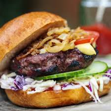

Hamburgers

Hamburgers are just the perfect fast food dish, and now you can easily make them at home!
So let's get started on this flavorful dish, be sure to follow the instructions carefully!
- 2 soft bread buns
- 2 hamburger patties
- Dijon mustard
- 4 slices of pickle
- 2 slices of cheese
- Mayonnaise
- Ketchup
- Preheat the oven to 200 degrees celsius, put a baking sheet on a baking tray and put the hamburgers on there
- When the oven is at 200 degrees, put in the hamburgers and set a timer for 11 minutes
- Slice open the buns and spread a thin layer of mustard on the bottom part
- Add two slices of pickle and the slice of cheese on top to each bottom
- When the hamburgers are done, add those on top of the slice of cheese
- Add mayonnaise and ketchup to taste on top of the burger
- Serve and eat right away!